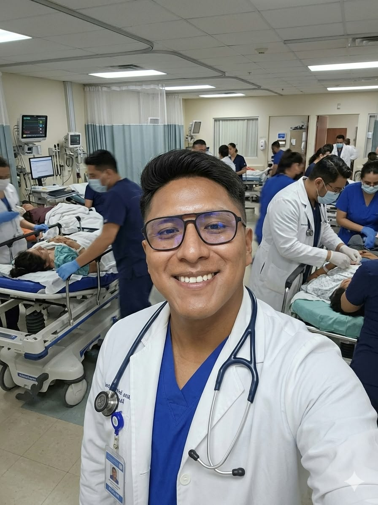

Medicina General
Orientación médica inicial para diferentes problemas de salud, evaluación de síntomas generales y recomendaciones sobre los pasos que debe seguir el paciente.
Solicitar orientación →Bienvenido a MedClick, una plataforma digital creada para facilitar el contacto entre pacientes y profesionales de salud.
Nuestro objetivo es ofrecer una forma sencilla, rápida y accesible de recibir orientación médica profesional desde cualquier lugar.
Tecnología y salud trabajando juntas para brindar una atención más accesible.
MedClick es una plataforma de orientación médica digital diseñada para facilitar la comunicación entre los pacientes y profesionales de salud.
Nuestra plataforma busca aprovechar las herramientas digitales para ofrecer a las personas una alternativa sencilla para comunicarse con profesionales capacitados y recibir orientación relacionada con diferentes áreas de la salud.
MedClick está pensado principalmente para personas que necesitan una primera orientación profesional, seguimiento de consultas o información médica básica, evitando desplazamientos innecesarios cuando la situación pueda ser atendida inicialmente mediante una consulta digital.
Facilita el contacto con profesionales de salud utilizando medios digitales.
Atención brindada por profesionales de diferentes especialidades.
Podrás comunicarte directamente mediante WhatsApp.
Actualmente MedClick ofrece orientación en cuatro áreas principales de atención médica.
Orientación médica inicial para diferentes problemas de salud, evaluación de síntomas generales y recomendaciones sobre los pasos que debe seguir el paciente.
Solicitar orientación →Orientación dirigida al cuidado de bebés, niños y adolescentes, ofreciendo información para padres sobre síntomas, alimentación, crecimiento y cuidado general.
Solicitar orientación →Orientación relacionada con la salud femenina, prevención, planificación familiar, salud reproductiva y otras consultas relacionadas con ginecología.
Solicitar orientación →Atención orientativa para pacientes adultos con enfermedades o síntomas relacionados con diferentes órganos y sistemas, además del seguimiento de enfermedades crónicas.
Solicitar orientación →Conoce a los profesionales que forman parte de MedClick. Puedes reemplazar los nombres y fotografías por los datos reales de tus médicos.
Médico dedicado a brindar atención primaria, orientación médica y seguimiento general de pacientes.
Profesional dedicada al cuidado integral de la salud de niños y adolescentes.

Profesional enfocada en prevención, orientación y cuidado integral de la salud femenina.
Profesional enfocado en la orientación, prevención y seguimiento de diferentes enfermedades del adulto.
Selecciona la especialidad que necesitas y comunícate directamente mediante WhatsApp.
MedClick ofrece un servicio de orientación médica digital. Este servicio no reemplaza una consulta médica presencial, especialmente en situaciones de emergencia.
Ante síntomas graves o una emergencia médica, el paciente debe acudir al establecimiento de salud correspondiente.